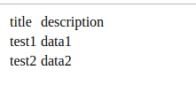
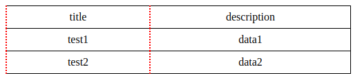
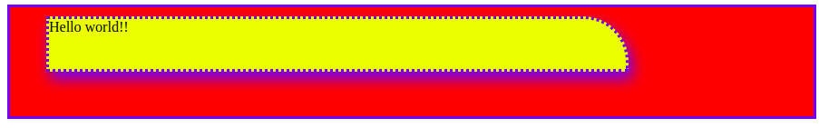

[CSS] border(枠)、余白スタイル - border, margin, padding
こんにちは。明月です。
CSSのスタイルと言うと基本的に文字列、余白、枠、位置、状態のスタイルが基本だと思います。
文字列は前述で説明しましたから、今回は枠(border)と余白に関して調べてみます。
HTMLタグでよく使うダグだというと「div」タグと「table」タグだと思います。
そのところで「table」タグで例を作ります。
<!DOCTYPE html>
<html>
<head></head>
<body>
<div>
<table>
<thead>
<tr>
<td>title</td>
<td>description</td>
</tr>
</thead>
<tbody>
<tr>
<td>test1</td>
<td>data1</td>
</tr>
<tr>
<td>test2</td>
<td>data2</td>
</tr>
</tbody>
</table>
</div>
</body>
</html>
上をみれば、例としてテーブルを作ってヘッダとボディを分けてテーブルのタイトルと内容を分けてタグを作成しました。スタイルを何もない状況でウェブブラウザに見るとテーブルで作成したとは感じられません。

タグだけではテーブルスタイルができないですね。そうするとCSSスタイルでテーブルみたいに修正しましょう。
table {
/*テーブル内の枠スタイルですが、collapse設定をしないと二重線で表示される。*/
border-collapse: collapse;
width: 500px;
}
/*tableタグの中でthタグとtableタグの中でtdタグ*/
table th, table td{
/*枠の線の太さ*/
border-width: 1px;
/*枠の線のスタイル - solid:実線、dotted:点線など。。*/
border-style: solid;
/*枠の線の色*/
border-color: black;
/*線の太さ、スタイル、色順で表示できる。*/
border: 1px solid black;
/*要素基準の左線の修正 - 右、上、下も可能 border-right, border-top, border-bottom*/
border-left: 2px dotted red;
/*幅のサイズ*/
width: 50px;
/*高さのサイズ*/
height: 30px;
/*テキスト整列*/
text-align: center;
}

今回は「table」タグではなく「span」タグでスタイルを付けましょう。
<!DOCTYPE html>
<html>
<head>
<style>
div.background {
/* 高さのサイズ */
height: 100px;
/* 枠のサイズ、スタイル、色 */
border: 3px solid blue;
/* これはない余白 */
padding: 10px;
/* バックグラウンド色 */
background: red;
}
span.item {
/* 要素表示タイプ */
display: inherit;
/* 幅のサイズ */
width: calc(70vw);
/* 高しのサイズ */
height: calc(10vh);
/* バックグラウンド色 */
background: yellow;
margin-left: 30px;
border-top-right-radius: 50px;
border: 3px dotted blue;
box-shadow: blue 4px 8px 16px 0px;
}
</style>
</head>
<body>
<div class="background">
<span class="item">Hello world!!</span>
</div>
</body>
</html>

上の例では「div」タグの中で「span」タグを入れました。
「div」タグは基本スタイルが「width:100%」です。それは「display:block」タイプですが、「display」タイプには次の投稿で説明します。
そのことで高さ、枠を設定しました。「padding」のスタイルがありますね。
「padding」は内余白、「margin」は外余白です。
例えば「div」と「span」の左の余白は「div」の内余白(padding)の「10px」と「span」の外余白(margin)の「30px」で全て「40px」の余白があります。
また「span」の「width」と「height」で「vw」は「vh」単位があります。
「vw」はブラウザの画面コントロールにのサイズによって「70vw」は幅の「70%」という意味です。「vh」は縦のサイズによって何パーセントと意味ですね。
また、「calc()」でプログラムで関数みたいな文法がありますね。それは括弧の内を計算してって意味です。
つまり、cal(70vw-10px)と意味はブラウザの幅の70パーセントサイズで10pxを引くことですね。
「margin」や「padding」、「border」の場合は「right」、「left」、「top」、「bottom」の小スタイルを持っています。
「radius」の場合は長方形の角を丸くするスタイルです。
「box-shadow」の場合は要素の影を描くスタイルですね。
- [CSS] 色スタイル、グラデーション2019/12/24 07:37:22
- [CSS] アニメーション (animation)2019/12/20 20:51:38
- [CSS] トランスフォーム (transform)2019/12/19 13:00:26
- [CSS] トランジション(transition)2019/12/18 20:33:57
- [CSS] Columnスタイル2019/12/17 19:52:56
- [CSS] 整列スタイル (float)2019/12/17 00:08:54
- [CSS] 位置(position),表示(display)スタイル2019/12/13 20:08:50
- [CSS] border(枠)、余白スタイル - border, margin, padding2019/12/12 20:16:43
- [CSS] 文字スタイル2019/12/11 21:13:22
- [CSS] その他の疑似選択子 - link, visited, target, enabled, disabled, not, active, hover, focus2019/12/10 07:31:28
- [CSS] 疑似要素選択子 - fist-line, first-letter, before, after2019/12/09 07:28:27
- [CSS] 範囲と指定に関する選択子(全体選択子、要素選択子、孫選択子、子選択子、隣接選択子)2019/12/06 07:27:36
- [CSS] 疑似クラス - only-child, only-of-type, empty, empty, root2019/12/05 07:29:15
- [CSS] 疑似クラス - first-child, last-child, first-of-type, last-of-type2019/12/04 07:28:37
- [CSS] 疑似クラス - nth-child, nth-of-type, nth-last-child, nth-last-of-type2019/12/03 07:21:20
- [Design pattern] 1-1. シングルトンパターン(Singleton pattern)2021/06/09 19:40:05
- [Design Pattern] デザインパターンの紹介2021/06/08 20:42:36
- [Tools] Dbeaver(無料Sql queryブラウザツール)2021/04/28 18:26:49
- [Bootstrap] HTMLデザインのフレームワークのBootstrap紹介2020/07/30 19:06:36
- [Python] メール(smtplib)を送信する方法2020/07/27 18:38:43
- [Python] HttpConnection(requestsモジュール)でウェブサーバーで接続する方法2020/07/20 14:41:51
- [Python] Excel(openpyxl)を扱う方法2020/07/16 16:40:31
- [Python] ファイル圧縮、解凍(zipfile)する方法2020/07/14 19:14:22
- [Python] Apache cgiでPythonを使う方法2020/07/09 19:58:19
- [Python] Web serverを起動する方法(http.server)2020/07/09 00:13:13
- [Python] WebSocketを使う方法2020/07/07 17:29:18
- [Python] PythonとJavaのソケット通信する方法2020/07/03 18:35:50
- [Python] PythonとC#のソケット通信2020/07/01 19:28:22
- [Python] INI(環境設定ファイル)を扱う方法2020/06/30 18:26:01
- [Python] Jsonを扱う方法2020/06/29 19:18:15